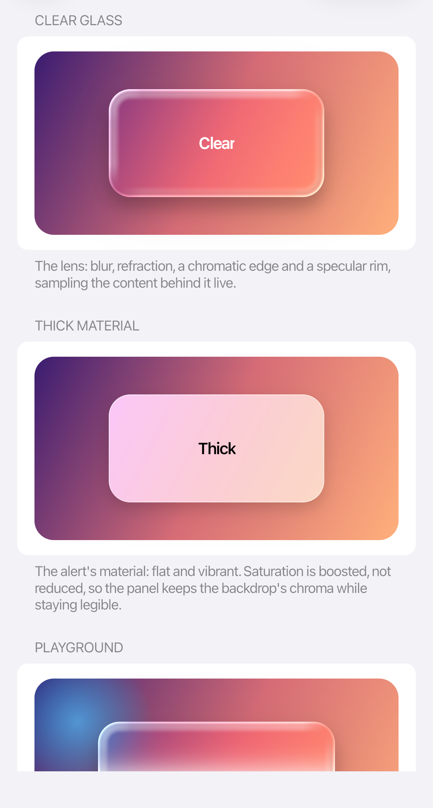

Liquid Glass
GlassSurface samples the pixels behind its child and combines blur, refraction, saturation, edge light, tint, and shadow into a live material.

<Panel xmlns:cupertino="https://cupertino.avaloniaui.net">
<Image Source="avares://MyApp/Assets/Backdrop.jpg"
Stretch="UniformToFill" />
<cupertino:GlassSurface Width="220"
Height="110"
CornerRadius="24"
IsLive="True"
BlurRadius="24"
GlassThickness="11"
RefractionStrength="18"
ChromaticAberration="0.5"
DepthEffect="0.28"
Saturation="1.3"
LightIntensity="0.9"
FresnelStrength="1">
<TextBlock HorizontalAlignment="Center"
VerticalAlignment="Center"
Text="Liquid Glass" />
</cupertino:GlassSurface>
</Panel>
Important properties
| Property | Effect |
|---|---|
BlurRadius |
Amount of background blur, in logical pixels |
GlassThickness |
Width of the refracting edge band |
RefractionStrength |
Backdrop displacement at the edge |
ChromaticAberration |
Color separation in the refraction band |
DepthEffect |
Strength of the curved lens effect |
Saturation |
Backdrop saturation multiplier |
Tint |
Material tint; alpha controls its strength |
LightIntensity and LightAngle |
Directional highlight |
FresnelStrength |
Brightness at the outer rim |
Magnification |
Convex magnification; 1 is flat |
IsAdaptive |
Adapts the material to backdrop luminance |
Start with an existing control's settings and adjust them to suit your design. Keep refraction and colour separation subtle behind text; stronger effects work better on small controls.
Rendering and accessibility
Liquid Glass uses Skia through GPU or software rendering. When backdrop sampling is unavailable, it uses a tinted fill. Reduce Transparency replaces glass with an opaque fill. Keep the content understandable without the glass effect.
The control refreshes briefly during input and layout changes. Set IsLive="True" when the background animates independently. For an occasional change made in code, call Pulse() after updating the background. Leave IsLive off for static backgrounds.
Limits and performance
Numeric settings are clamped to supported ranges; NaN and infinite values reset to the property defaults.
Large glass surfaces need more memory. If an effect exceeds the rendering limits or memory allocation fails, the control uses a tinted fill.
Refraction supports translating and scaling a control, including different horizontal and vertical scale factors. Rotation, skew, reflection and perspective use the tinted fallback. Without Skia, that fallback uses the top-left corner radius for all four corners.
Each live frame samples and blurs the background again. Profile screens with several large glass controls on your target devices.